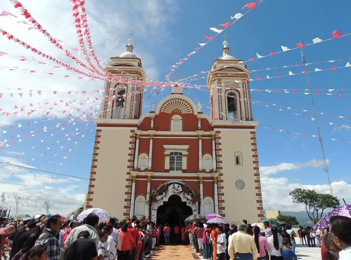

El Santuario de Nuestro Señor del Calvario se erige como un centro de fe prominente en Tlacotepec de Benito Juárez, Puebla.
Este templo no es solo una edificación para el culto, sino un punto de encuentro espiritual y cultural que atrae a fieles y
peregrinos de diversas regiones. La devoción principal se centra en la venerada imagen del Señor del Calvario, un Cristo Negro
conocido por su carácter milagroso, que constituye el corazón espiritual de la comunidad. La alta calificación otorgada por sus
visitantes, un 4.8 sobre 5, refleja un profundo aprecio general por la atmósfera y el significado del lugar.
Descrito por sus visitantes como un "centro espiritual místico", el santuario ofrece un ambiente de paz y recogimiento.
Su historia es notable, pues se dice que el templo fue edificado sobre una antigua pirámide popoloca, fusionando así siglos de
historia prehispánica y colonial. La construcción, iniciada por franciscanos entre 1604 y 1609, presenta un estilo colonial que
ha sido conservado a lo largo del tiempo. Un elemento arquitectónico y devocional distintivo es la "Santa Escala", una escalinata
que representa el Vía Crucis de Jesucristo. Con una sección original de 103 escalones y una más reciente que suma un total de 145,
ascender por ella es un acto de fe para muchos peregrinos. Desde la cima del cerro donde se asienta el santuario, los visitantes
pueden disfrutar de vistas panorámicas impresionantes, alcanzando a ver los volcanes Popocatépetl, Iztaccíhuatl y la Malintzi en días despejados.
